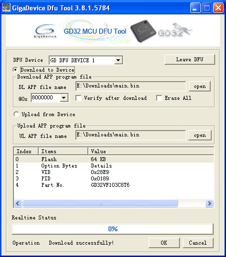

編譯工具(Debian x64)：
$ cd $ wget https://github.com/steward-fu/website/releases/download/gd32vf103/nuclei_riscv_newlibc_prebuilt_linux64_2020.08.tar.bz2 $ tar xvf nuclei_riscv_newlibc_prebuilt_linux64_2020.08.tar.bz2 $ sudo mv gcc /opt/risc-v $ export PATH=$PATH:/opt/risc-v/bin
燒錄工具(Windows系統)：
1. 下載https://github.com/steward-fu/website/releases/download/gd32vf103/GD32_MCU_Dfu_Tool_V3.8.1.5784_1.rar
2. 安裝驅動程式(GD32 MCU Dfu Drivers_v1.0.1.2316)
3. 執行燒錄工具(GD32 MCU Dfu Tool_v3.8.1.5784)
